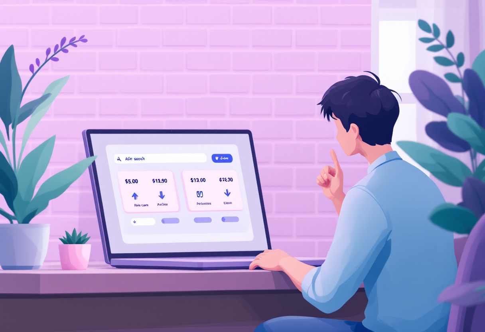
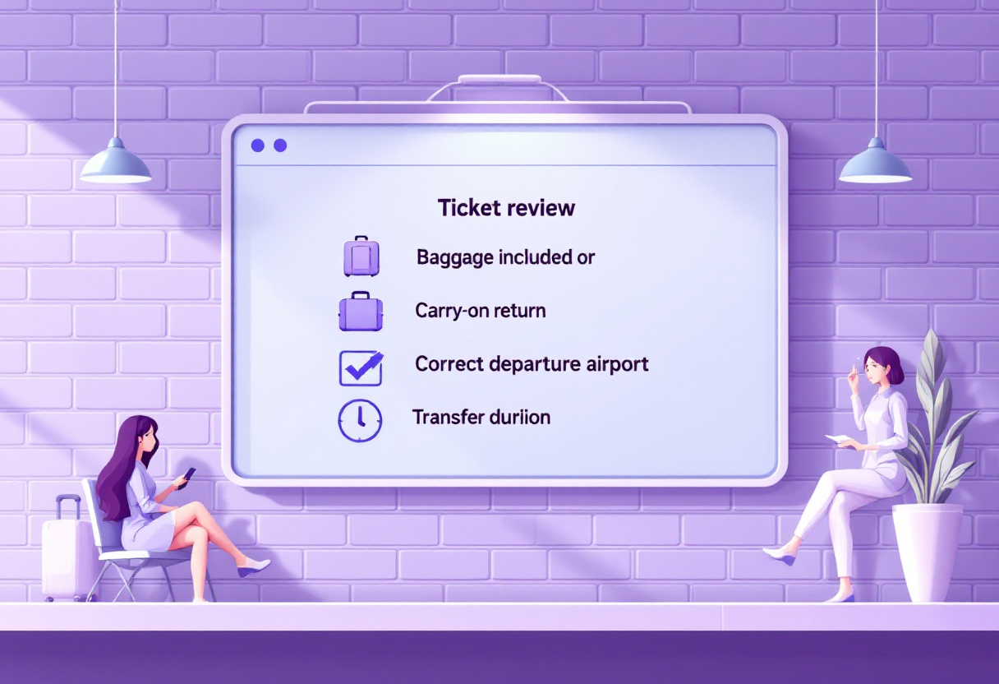
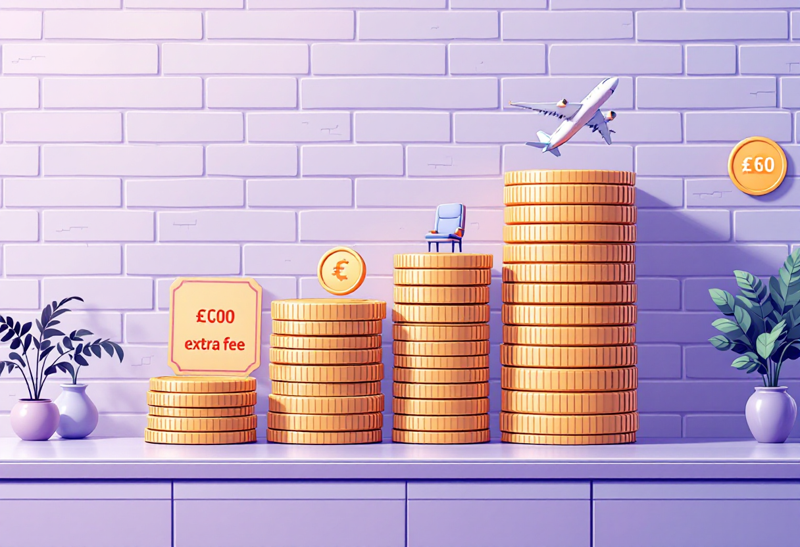
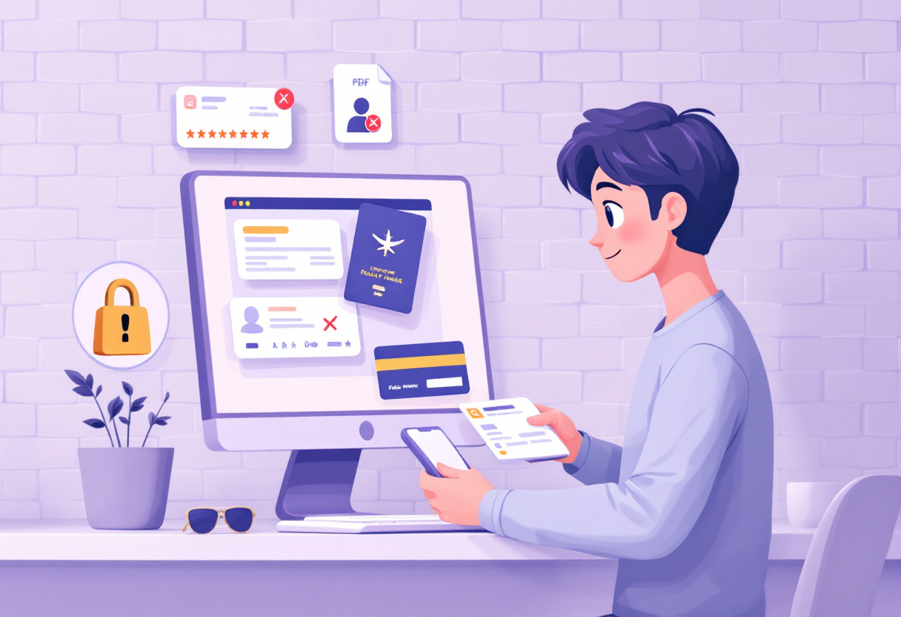

Квитки: як обрати і не переплатити
Де шукати дешеві авіаквитки, коли купувати і як не потрапити на шахраїв.

Де шукати авіаквитки
Ціни на одні й ті ж рейси можуть відрізнятись в рази залежно від місця купівлі.
- Google Flights — безкоштовний пошук з графіком цін.
- Skyscanner — порівнює сотні сайтів одразу.
- Сайти авіакомпаній — іноді дешевше, ніж через агрегатори.
- Kayak, Momondo — альтернативні агрегатори для порівняння.

Коли купувати: секрети часу
Час купівлі суттєво впливає на ціну. Є кілька перевірених закономірностей.
- Найдешевше в Європу — за 6–8 тижнів до вильоту.
- Вівторок і середа — зазвичай найдешевші дні для вильоту.
- Ранні рейси (6:00–8:00) і пізні нічні — дешевші за денні.
- Підпишись на сповіщення про ціни в Google Flights — отримаєш email при падінні ціни.

Лоукости: дешево, але з нюансами
Ryanair, Wizz Air, easyJet пропонують низькі ціни, але мають приховані витрати.
- Базова ціна — часто без ручної поклажі більше 10 кг.
- Доплата за місце, реєстрацію в аеропорту, харчування — рахуй все.
- Перевір розміри дозволеного багажу — різні у кожного лоукосту.
- Реєструйся онлайн — в аеропорту часто беруть доплату.

Безпека та повернення квитків
Купівля через надійні платформи і знання правил повернення — захищають від втрат.
- Купуй лише через офіційні сайти або відомі агрегатори.
- Звертай увагу на умови повернення: refundable чи non-refundable.
- Страховка подорожі — варто брати, особливо для довгих поїздок.
- Зберігай підтвердження та маршрут-квитанцію окремо від tickets app.